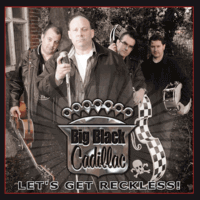

Big Black Cadillac - Let's Get Reckless (Album, 2012)
01 - Shakin' Little Mama (2:19)
02 - Forest (3:58)
03 - Weekend And Reckless (5:18)
04 - Edge Of A Knife (3:17)
05 - Step Into My Life (2:38)
06 - Through The Night (4:40)
07 - As You Like It (2:13)
08 - She's My Girl (3:31)
09 - Not Guilty (2:31)
10 - Surf Storm (2:24)
11 - Walking On A Tightrope (2:15)
12 - Running Free (2:29)
© Black Fin Records :: [BF001CD]
Notes
United Kingdom.
Black Fin Records by arrangement with Nervous Records
reference information: Discogs®
Review
168/366 (Project 366)
Quite (neo)Rockabilly with modern Rock'n'Roll sound. Different moods, heavy energy, playful arrangements with straightforward motion, nice vocals. Pretty serious approach.